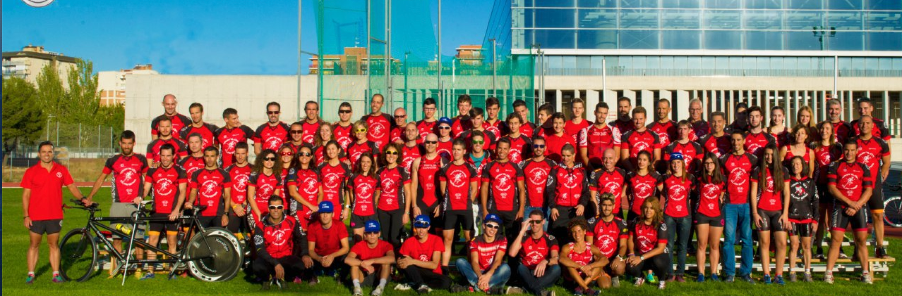

Nuestros Patrocinadores


Tri Infinity Móstoles somos un club de triatlón ubicado en la localidad de Móstoles, al suroeste de Madrid y con una segunda sede en Navalcarnero. Su objetivo es difundir el triatlón y sus disciplinas a todos los niveles y edades.
Nuestra andadura comienza en noviembre de 2008 y, a día de hoy, somos más de 260 socios, de los cuales 100 forman parte de nuestra escuela de triatlón.
En 2012 creamos la Escuela de Triatlón, como parte de nuestro compromiso con el desarrollo del triatlón y el deporte base.
Disponemos de grupos de entrenamiento en horario de mañana y tarde, para todos los niveles, en ambas sedes. Están dirigidos por entrenadores nacionales de triatlón, para que entrenes en el horario que mejor se adapte a tus necesidades.
Si eres mujer, contamos con un nutrido grupo de entrenamiento, y con Las Retadas, un grupo dirigido a las mujeres y a las madres que buscan iniciarse en el mundo del triatlón, además de socializar en un entorno deportivo.
En 2023, hemos creado un grupo de Alto Rendimiento deportivo, con junior y sub23, cuyo objetivo es competir en las máximas categorías nacionales. El Grupo «R» se ha dotado de un equipo multidisciplinar compuesto por fisioterapeutas, psicólogo deportivo, nutricionista, biomecánico y experto en redes sociales.
Para los amantes de la media y larga distancia, contamos con un grupo específico que se ocupa de estas pruebas: el Comando TVAR. Este nutrido grupo abarca tanto a deportistas de alto nivel como a quienes se inician en estas distancias.
A nivel social, nos enfocamos en difundir el triatlón a todos los niveles y en todas las distancias. Tanto desde el deporte base en los grupos de la escuela, como en grupos por edad o para quienes buscan el máximo rendimiento.
A nivel competitivo, intentamos disputar las ligas de duatlón y triatlón a nivel nacional, además de los Ranking de la Comunidad de Madrid (federación madrileña) y Ranking Nacional ( Federación española), y la Copa de España de Triatlón de media distancia.